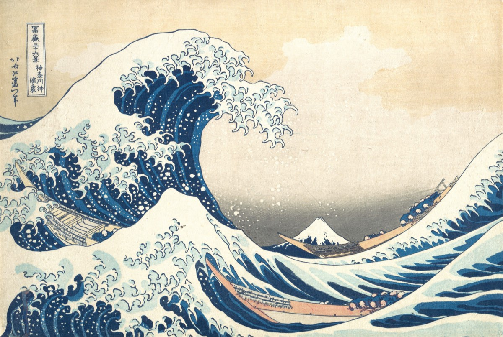
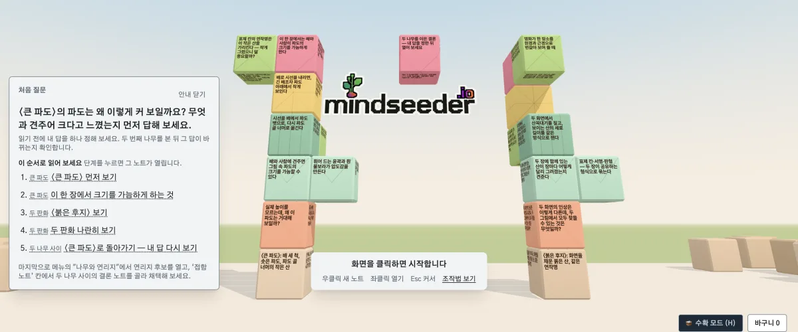

질문정원1호 · 호쿠사이의 판화 두 장
〈큰 파도〉를 다시 보면, 어디에 눈이 갈까?
가쓰시카 호쿠사이의 같은 연작에서, 약 1830–32년에 제작된 목판화 두 장을 골랐습니다. 첫 그림에서 눈이 먼저 간 곳을 정하고, 같은 연작의 다른 한 장을 본 뒤, 첫 그림으로 돌아옵니다.
먼저 한 장만 보세요
설명을 읽기 전에 그림부터 봅니다. 처음 몇 초 동안 눈이 어디로 갔는지가 이 글의 출발점입니다.

그림에는 파도의 높이를 적은 숫자가 없습니다. 그런데도 파도가 크게 느껴진다면, 무엇과 견주었을까요?
앞쪽 배를 보면 여러 사람이 줄지어 몸을 낮추고 있습니다. 왼쪽 큰 파도의 볏은 그 배들보다 훨씬 위, 화면 위 끝 가까이에 있습니다. 배와 사람의 크기는 대략 떠올릴 수 있으니, 그 곁에 놓인 파도의 크기를 가늠할 수 있습니다.
같은 연작의 다른 한 장
이번에는 같은 연작에 든 판화 한 장입니다.

화면 오른쪽 대부분을 붉은 사면의 산이 채우고, 하늘에는 흰 구름이 줄지어 떠 있습니다. 사람도 배도 보이지 않습니다. 색도, 화면을 채운 것도 첫 그림과 다릅니다.
두 장 모두 왼쪽 위에 세로로 긴 표제 칸이 있습니다. 앞의 여섯 글자는 같고, 뒤의 글자만 다릅니다.
| 판화 | 연작명 | 작품명 |
|---|---|---|
| 〈큰 파도〉 | 冨嶽三十六景후지산 서른여섯 경치 | 神奈川沖浪裏가나가와 앞바다의 파도 아래 |
| 〈붉은 후지〉 | 冨嶽三十六景후지산 서른여섯 경치 | 凱風快晴남풍, 맑은 하늘 |
첫 글자는 富의 이체자 冨로 인쇄되어 있습니다. 연작명은 후지산을 가리키고, 〈큰 파도〉의 작품명에는 후지산을 가리키는 말이 없습니다.
다시 〈큰 파도〉로
〈붉은 후지〉에서 화면을 채운 산을 기억한 채로, 첫 그림에서 그 산을 찾아보세요.
1단계에서 처음 고른 곳:
산이 어디 있는지 보기
파도 골 너머, 화면 가운데에서 조금 오른쪽 아래입니다. 꼭대기가 흰 작은 산이 배 너머에 보이고, 산기슭은 배와 파도에 가려 있습니다.
찾았다면 작은 산과 그 위로 솟은 파도를 번갈아 보세요. 처음 고른 곳은 그대로인가요? 파도의 크기를 무엇과 견주는지가 배와 사람에서 멈추나요, 산까지 넓어지나요? 어떻게 달라 보일지는 보는 사람마다 다를 수 있습니다.
제작자 측정: 메트 이미지를 긴 변 1200px로 줄인 두 파일에서, 보이는 산의 세로 길이는 〈붉은 후지〉에서 이미지 높이의 약 77%, 〈큰 파도〉에서 약 9%입니다. 판화나 산의 실제 크기가 아니라 화면 속 크기입니다.
두 장에서 되풀이되는 것은 산이고, 크게 바뀌는 것은 화면 속 산의 크기와 곁의 사물입니다. 같은 산을 화면을 채우게도, 파도 너머에 작게도 둔 구도로 읽힙니다. 작가의 의도가 아니라 두 화면에서 확인할 수 있는 읽기이며, 연작 가운데 두 장만 본 판단입니다.
“두 그림에서 같은 산을 찾고 나니, 처음에는 파도의 높이만 보던 내가 산과 파도의 크기를 비교하게 됐다.”
독자가 할 수 있는 관찰의 한 예입니다. 다르게 보였다면 그 차이를 자기 문장으로 적어 보세요.
앱에서는 두 그림이 두 나무가 됩니다
이 글은 질문정원 호쿠사이 편을 줄여 옮긴 것입니다. 정원에는 노트 19개가 있습니다. 나무 ‘큰 파도’와 ‘두 판화’에 아홉 개씩 쌓였고, 두 나무 사이 위에 둘을 잇는 결론 노트가 하나 떠 있습니다. 정원에서는 이 글에서 생략한 다른 설명과 반론도 읽을 수 있고, 두 판화를 소개하는 노트에는 메트 소장품 기록 링크가 있습니다.

- 안내 카드의 다섯 단계를 누르면 그 노트가 열립니다. 마지막 단계가 두 나무를 이은 결론입니다.
- 뒤로 물러나면 두 나무를 한눈에 봅니다. Office 보기에서는 같은 노트를 카드로 나란히 읽습니다.
- 열면 이 기기에 내 사본이 생깁니다. 노트를 고치거나, 내가 본 것을 노트 하나로 더 쌓아 보세요.
두 나무 사이를 직접 오가 보세요.
가입하지 않아도 됩니다. 처음이면 ‘가입 없이 이 기기에서 시작’을, 이어서 샘플 창의 ‘열기’를 누르세요.
원자료
- 가쓰시카 호쿠사이(1760–1849), 〈가나가와 앞바다의 파도 아래〉(神奈川沖浪裏, Kanagawa oki nami ura), 흔히 〈큰 파도〉, 《후지산 서른여섯 경치》(冨嶽三十六景, Fugaku sanjūrokkei) 중, 약 1830–32년, 목판화(종이에 먹과 색), 25.7×37.9cm. 메트로폴리탄 미술관 소장, H. O. Havemeyer Collection, Bequest of Mrs. H. O. Havemeyer, 1929(JP1847). 메트 Open Access 퍼블릭 도메인 이미지(CC0), 자르지 않고 긴 변 1200px로 줄임.메트 작품 페이지 45434컬렉션 API
- 가쓰시카 호쿠사이(1760–1849), 〈남풍, 맑은 하늘〉(凱風快晴, Gaifū kaisei), 흔히 〈붉은 후지〉, 《후지산 서른여섯 경치》(冨嶽三十六景, Fugaku sanjūrokkei) 중, 약 1830–32년, 목판화(종이에 먹과 색), 24.4×35.6cm. 메트로폴리탄 미술관 소장, Rogers Fund, 1914(JP9). 메트 Open Access 퍼블릭 도메인 이미지(CC0), 자르지 않고 긴 변 1200px로 줄임.메트 작품 페이지 36490컬렉션 API
- 메트로폴리탄 미술관 Open Access 정책: 퍼블릭 도메인 작품 이미지는 CC0로 제공됩니다.Open Access
이 글과 정원을 만든 방식
- 실제 기록에서 출발했습니다
- 그림과 작품명·연대·크기·소장 번호는 메트로폴리탄 미술관의 소장품 기록과 Open Access 이미지에서 가져왔고, 표제 칸의 글자는 그림에서 읽어 직접 옮겼습니다.
- 해석에는 표시를 붙였습니다
- 두 그림을 잇는 결론, 측정값, 예시는 이 글과 정원 노트 모두에 ‘제작자 해석’, ‘제작자 측정’, ‘제작자 예시’로 표시했습니다. 작가의 의도는 단정하지 않습니다.
- “정말?” 담당은 따로 있었습니다
- 한 AI는 글을 쓰고 정원을 만들었어요. “정말?”을 맡은 다른 AI는 메트의 작품 기록을 열어 내용을 대조했어요. 미술사 전문가의 검토는 거치지 않았습니다. 오류를 발견하면 support@mindseeder.io로 알려 주세요.
다음 읽기
장소만 보면 놓치는 것존 스노 — 펌프 손잡이와 두 수도회사
호쿠사이에서는 산이 화면의 어디에 놓였는지 봤습니다. 존 스노의 1855년 기록에서는 소호의 펌프 둘레에 사망이 모인 자리를 본 뒤, 같은 거리의 집들을 가른 물 공급이라는 다른 관계를 엽니다.
앱에서 존 스노 정원 열기